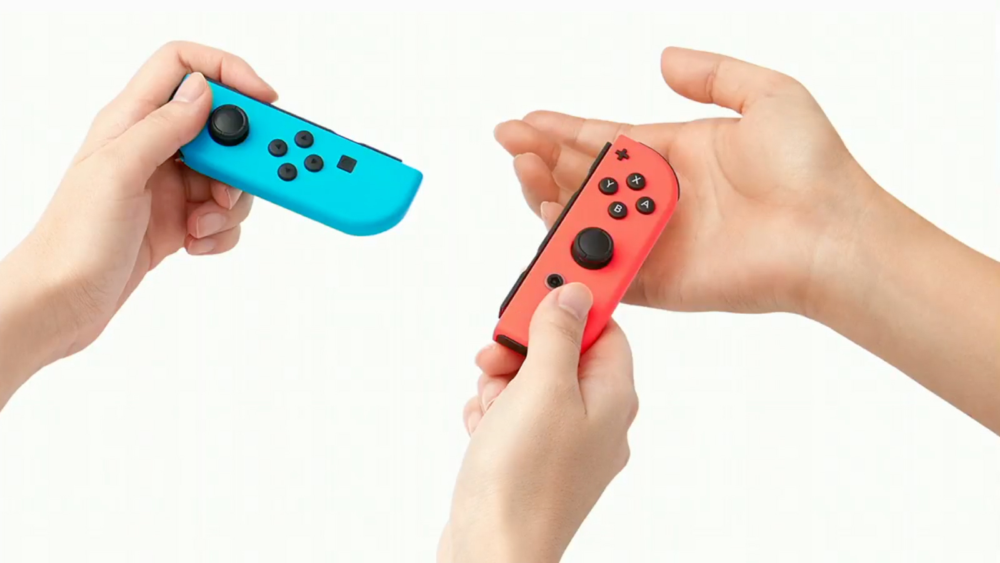

Portabilität
"Wohl der Hauptaugenmerk dieser Spielekonsole! Man braucht nicht immer ein Fernseher, um
dieses Gerät zu bedienen. Einfach aus der Docker-Station herausnehmen
und weiterspielen! Nintendo fusioniert hier die Fähigkeiten ihrer Heimkonsolen, wie die Wii,
mit Handheld-Geräten, wie das DS, in eines zusammen, wodurch für gemeinsame Spieleabende,
sowie Unterhaltung für zwischendurch gleichzeitig gesorgt werden kann." So hat sich wohl
jeder Werbeclip damals ungefähr angefühlt. Und das zu einem guten Grund! Die Mobilität, welche die
Switch an den Tag gelegt hat, ist im Rahmen der Heimkonsolen noch nie zuvor gesehen gewesen.
Aber wie sieht es mit anderen Features der Switch aus? Konnte sie oder kann sie immer noch mit
Konkurrenten mithalten, oder schauen wir nur noch auf ein veraltetes Stück Hardware? Lies hier weiter,
um eine zusammenfassende Retrospektive zu diesem innovativem Gerät zu erhalten.

Spiele-Repertoire
Da Nintendo natürlich nicht nur Konsolen, sondern auch eigene ikonische Spiele entwickelt,
erhält man durch die Switch erstmals Zugriff auf diese Spiele... Oder wohl eher Zugriff auf
den Kauf dieser Spiele... Zumindest bis ein neues Nintendo-Gerät auf den Markt kommt. Nintendo
ist ja leider keine kleine Indie-Firma mehr. Wenn man aber darüber (und über die unzähligen
Remasters schon fast dekadealter Spiele) hinwegschaut, hat man nun nach einigen Jahren schon
relativ zahlreiche Klassiker erhalten, zwischen welchen man wählen kann. Ob Mario, Zelda,
Pokémon oder Sammlungen alter Retrogames, an Franchise-Spielen wurde ausgesorgt. Um
Multiplayer-Funktionen zu nutzen, wie in Mario Kart 8 Deluxe beispielsweise, wird jedoch noch
ein kostenpflichtiges Abo benötigt. Wer aber nun denkt, dass die Online-Performance dadurch
umso hochwertiger ist, da sich Nintendo vielleicht höhere Kapazitäten leisten kann, irrt
jedoch leider.

Performance
Dedizierte Server und allgemeines schlechtes Online-Management einer Firma wie Nintendo sorgen
für Spieler schon lange für Kopfschmerzen, weshalb sich viele wohler in Singleplayer-Games fühlen
und darauf beim Kauf auch das Hauptaugenmerk legen. Wie die Switch da abschneidet kommt auf das
Spiel und den Spieler selbst an. Manche geben sich mit FPS-Drops auf unter 30 im Jahre 2024 in AAA-Spielen,
wie The Legend of Zelda: Tears of the Kingdom (ja, ein NINTENDOEIGENES Spiel), zufrieden, andere
eher weniger. Es hapert an Optimierung von Spielen gegenüber der Switch, was aber nicht
verwunderlich ist, wenn Aussehen und Umfang der Software immer besser wird, aber die Switch mit
Hardwareelementen aus dem Jahre 2015 und absteigend arbeiten muss. Doch selbst in den ersten Jahren
nach Switch-Release gab es schon Performance-Beschwerden, vor allem bei nintendofremden Produkten, was
natürlich das Konsolen Master-Race in diesem Aspekt für Nintendo etwas ins Schwanken gebracht hat.
Aber historisch gesehen konnten die Hardwareprodukte des japanischen Herstellers technisch natürlich
seit der Jahrtausendwende noch nie wirklich mit Sonys Playstation oder Microsofts Xbox mithalten.
Es gab zwar schon Leaks, dass vor allem die Performance der Switch in der Dockerstation beim
Nachfolger stark verbessert werden soll, doch inwiefern solche Gerüchte stimmen, werden wir wohl erst in
Monaten oder sogar erst Jahren erfahren, wenn die nächste Konsole des Spielegiganten auf den Markt kommt.

Controller, die Freude machen?
Auch wenn die Switch im technischen Aspekt zwar eher im hinteren Mittelfeld heutiger Konsolen bzw.
Gaming-PC-Konfigurationen liegt, ist ihr niemand im Bereich der Innovation gleichzusetzen (zumindest zu Release).
Die schon angesprochenen Mobilitätsmöglichkeiten sind hier natürlich sehr ausschlaggebend. Doch ein weiteres
wichtiges Feature, was diese Portabilität erst einmal ermöglicht, sind die Controller der Switch, die
sogenannten "Joy-Cons", welche sich leicht an die Konsole anbringen und von der Konsole abbringen lassen.
Dies ermöglicht Spielern das Interagieren mit dem Gerät entweder direkt im Handheld-Modus oder auf dem Sofa
von einer Distanz aus. Im Interface kann man sich auf dem Screen sogar per Touch bewegen, was aber für solch
eine Konsole von 2017 auch zu erwarten ist. Die Controller selbst zeigen aus eigener Erfahrung 7 Jahre später
noch eine sehr präzise Bewegungserkennung sowie Vibrationssteuerung, was zurecht damals als ein ernstzunehmender
Fortschritt aus Nintendos Richtung wahrgenommen worde. Selbst wenn diese Entwicklung natürlich nicht so bahnbrechend
war, wie die Bewegungssteuerung-Revolution der Wii-Controller damals, merkt man schon sehr, dass Nintendo auf
vorherigen Projekten aufbaut, verfeinert und, wie an der Switch perfekt erkennbar, miteinander kombiniert, um eine
komplett neue Erfahrung zu erschaffen. Natürlich haben in dem Aspekt nun auch Konkurrenzunternehmen aufgeholt, und
das natürlich auch mit besserer Technik. Ob der Innovator der Konsolenbranche sich also weiterhin mit für den
Mainstream neuen Ideen rühmen kann oder sich im Wettbewerb auch mal mehr auf Performance stützen will, kann nur die
Zukunft zeigen...
